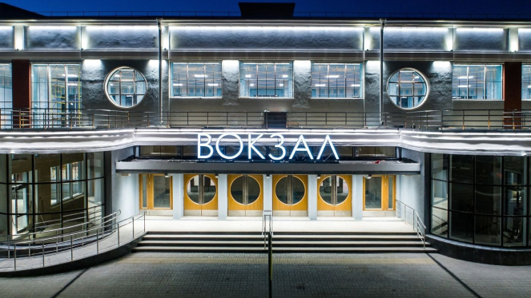
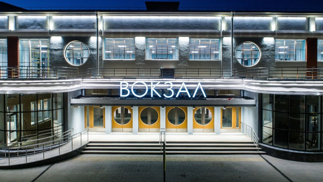
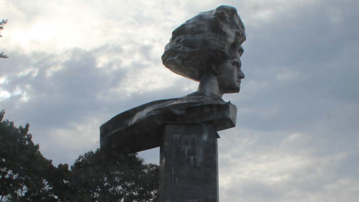
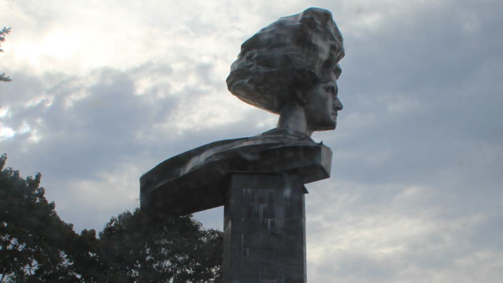

 

Иваново получило название «город невест» в послевоенное время, так как многие мужчины пали на фронтах Второй мировой, а на местных текстильных предприятиях трудились очень много женщин. В процентном соотношении их было в несколько раз больше, чем представителей сильного пола.